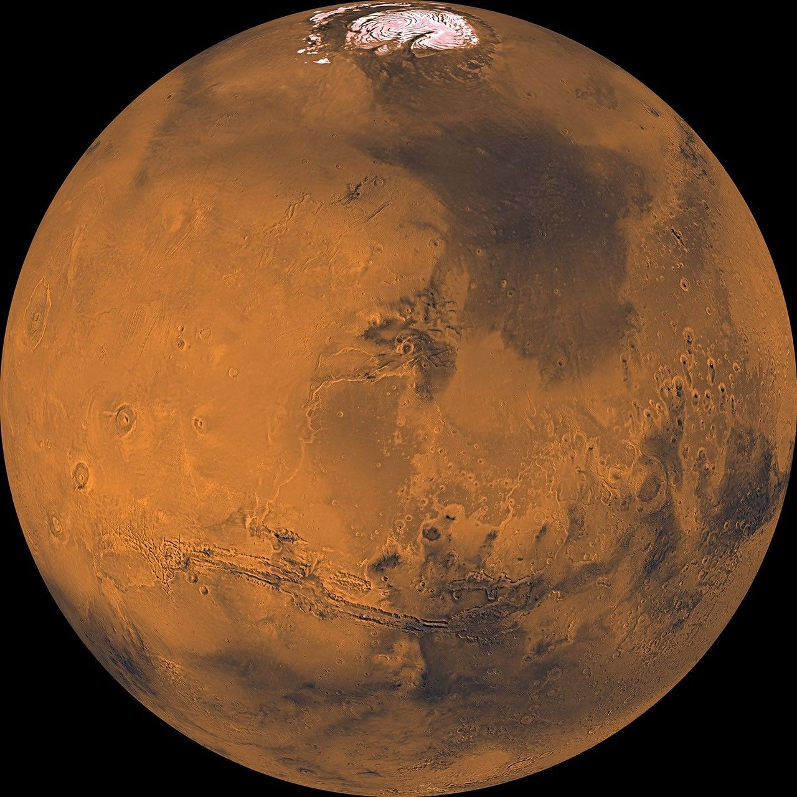

The fourth planet from the Sun, Mars is a dusty, cold, desert world with a very thin atmosphere. Mars was named by the ancient Romans for their god of war because its reddish color was reminiscent of blood. The Red Planet is actually many colors. At the surface we see colors such as brown, gold and tan. The reason Mars looks reddish is due to oxidization—or rusting—of iron in the rocks, regolith (Martian “soil”), and dust of Mars. This dust gets kicked up into the atmosphere and from a distance makes the planet appear mostly red. Mars is home to the largest volcano in the solar system, Olympus Mons. It's three times taller than Earth's Mt. Everest with a base the size of the state of New Mexico.
Mars appears to have had a watery past, with ancient river valley networks, deltas and lakebeds, as well as rocks and minerals on the surface that could only have formed in liquid water. Some features suggest that Mars experienced huge floods about 3.5 billion years ago. There is water on Mars today, but the Martian atmosphere is too thin for liquid water to exist for long on the surface. Today, water on Mars is found in the form of water-ice just under the surface in the polar regions as well as in briny (salty) water, which seasonally flows down some hillsides and crater walls. No planet beyond Earth has been studied as intensely as Mars. Today, a science fleet of robotic spacecraft study Mars from all angles.